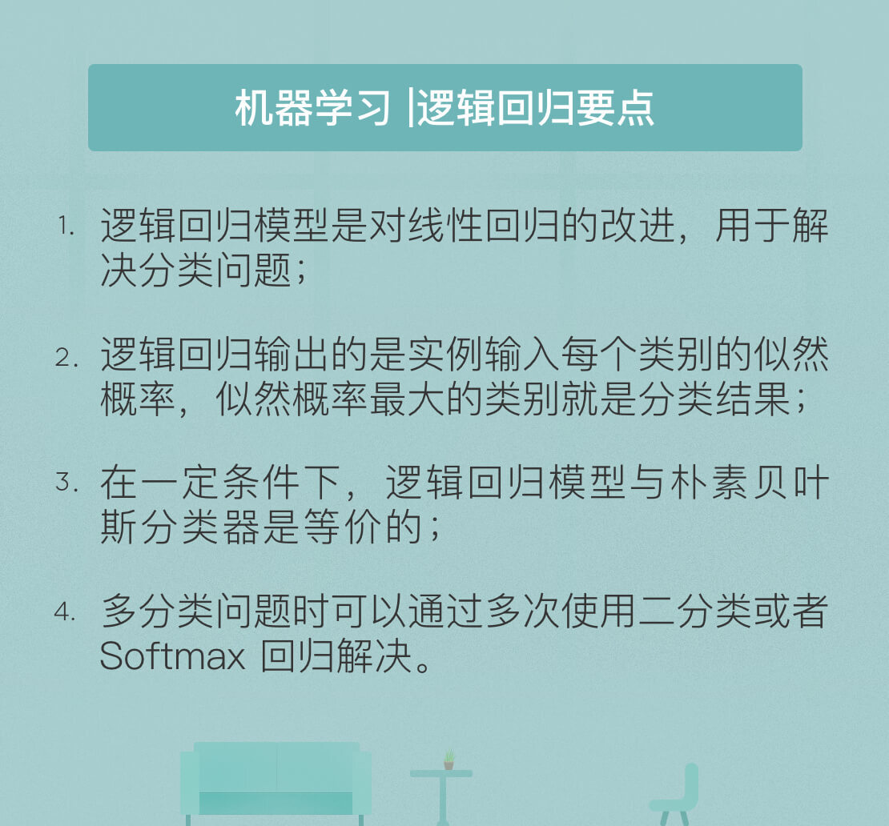

- 00 开篇词 人工智能：新时代的必修课.md.html
- 01 数学基础 九层之台，起于累土：线性代数.md.html
- 02 数学基础 月有阴晴圆缺，此事古难全：概率论.md.html
- 03 数学基础 窥一斑而知全豹：数理统计.md.html
- 04 数学基础 不畏浮云遮望眼：最优化方法.md.html
- 05 数学基础 万物皆数，信息亦然：信息论.md.html
- 06 数学基础 明日黄花迹难寻：形式逻辑.md.html
- 07 机器学习 数山有路，学海无涯：机器学习概论.md.html
- 08 机器学习 简约而不简单：线性回归.md.html
- 09 机器学习 大道至简：朴素贝叶斯方法.md.html
- 10 机器学习 衍化至繁：逻辑回归.md.html
- 11 机器学习 步步为营，有章可循：决策树.md.html
- 12 机器学习 穷则变，变则通：支持向量机.md.html
- 13 机器学习 三个臭皮匠，赛过诸葛亮：集成学习.md.html
- 14 机器学习 物以类聚，人以群分：聚类分析.md.html
- 15 机器学习 好钢用在刀刃上：降维学习.md.html
- 16 人工神经网络 道法自然，久藏玄冥：神经网络的生理学背景.md.html
- 17 人工神经网络 一个青年才俊的意外死亡：神经元与感知器.md.html
- 18 人工神经网络 左手信号，右手误差：多层感知器.md.html
- 19 人工神经网络 各人自扫门前雪：径向基函数神经网络.md.html
- 20 人工神经网络 看不见的手：自组织特征映射.md.html
- 21 人工神经网络 水无至清，人莫至察：模糊神经网络.md.html
- 22 深度学习 空山鸣响，静水流深：深度学习概述.md.html
- 23 深度学习 前方有路，未来可期：深度前馈网络.md.html
- 24 深度学习 小树不修不直溜：深度学习中的正则化.md.html
- 25 深度学习 玉不琢不成器：深度学习中的优化.md.html
- 26 深度学习 空竹里的秘密：自编码器.md.html
- 27 深度学习 困知勉行者勇：深度强化学习.md.html
- 28 深度学习框架下的神经网络 枯木逢春：深度信念网络.md.html
- 29 深度学习框架下的神经网络 见微知著：卷积神经网络.md.html
- 30 深度学习框架下的神经网络 昨日重现：循环神经网络.md.html
- 31 深度学习框架下的神经网络 左右互搏：生成式对抗网络.md.html
- 32 深度学习框架下的神经网络 三重门：长短期记忆网络.md.html
- 33 深度学习之外的人工智能 一图胜千言：概率图模型.md.html
- 34 深度学习之外的人工智能 乌合之众的逆袭：集群智能.md.html
- 35 深度学习之外的人工智能 授人以鱼不如授人以渔：迁移学习.md.html
- 36 深度学习之外的人工智能 滴水藏海：知识图谱.md.html
- 37 应用场景 你是我的眼：计算机视觉.md.html
- 38 应用场景 嘿, Siri：语音处理.md.html
- 39 应用场景 心有灵犀一点通：对话系统.md.html
- 40 应用场景 数字巴别塔：机器翻译.md.html
- 一键到达 人工神经网络复习课.md.html
- 一键到达 应用场景复习课.md.html
- 一键到达 数学基础复习课.md.html
- 一键到达 机器学习复习课.md.html
- 一键到达 深度学习之外的人工智能复习课.md.html
- 一键到达 深度学习复习课.md.html
- 一键到达 深度学习框架下的神经网络复习课.md.html
- 推荐阅读 我与人工智能的故事.md.html
- 新书 《裂变：秒懂人工智能的基础课》.md.html
- 直播回顾 机器学习必备的数学基础.md.html
- 第2季回归 这次我们来聊聊机器学习.md.html
- 结课 溯洄从之，道阻且长.md.html
- 课外谈 “人工智能基础课”之二三闲话.md.html
- （课外辅导）人工神经网络 拓展阅读参考书.md.html
- （课外辅导）数学基础 拓展阅读参考书.md.html
- （课外辅导）机器学习 拓展阅读参考书.md.html
- （课外辅导）深度学习 拓展阅读参考书.md.html
- 捐赠
10 机器学习 衍化至繁：逻辑回归
周四我和你分享了机器学习中的朴素贝叶斯分类算法，这一算法解决的是将连续取值的输入映射为离散取值的输出的分类问题。朴素贝叶斯分类器是一类生成模型，通过构造联合概率分布\(P(X, Y)\)实现分类。如果换一种思路，转而用判别模型解决分类问题的话，得到的算法就是“逻辑回归”。
虽然顶着“回归”的名号，但逻辑回归解决的却是实打实的分类问题。之所以取了这个名字，原因在于它来源于对线性回归算法的改进。通过引入单调可微函数\(g(\\cdot)\)，线性回归模型就可以推广为\(y = g ^ {-1} (\\mathbf{w} ^ T \\mathbf{x})\)，进而将线性回归模型的连续预测值与分类任务的离散标记联系起来。当\(g(\\cdot)\)取成对数函数的形式时，线性回归就演变为了逻辑回归。
在最简单的二分类问题中，分类的标记可以抽象为0和1，因而线性回归中的实值输出需要映射为二进制的结果。逻辑回归中，实现这一映射是对数几率函数，也叫Sigmoid函数
\[ y = \\dfrac{1}{1 + e ^ {-z}} = \\dfrac{1}{1 + e ^ {- (\\mathbf{w} ^ T \\mathbf{x})}} \]
之所以选择对数几率函数，是因为它具备良好的特性。
首先，对数几率函数能够将线性回归从负无穷到正无穷的输出范围压缩到(0, 1)之间，无疑更加符合对二分类任务的直观感觉。
其次，当线性回归的结果\(z = 0\)时，逻辑回归的结果\(y = 0.5\)，这可以视为一个分界点：当\(z > 0\)时，\(y > 0.5\)，此时逻辑回归的结果就可以判为正例；当\(z < 0\)时，\(y < 0.5\)，逻辑回归的结果就可以判为反例。
显然，对数几率函数能够在线性回归和逻辑回归之间提供更好的可解释性。这种可解释性可以从数学的角度进一步诠释。
如果将对数几率函数的结果\(y\)视为样本\(\\mathbf{x}\)作为正例的可能性，则\(1 - y\)就是其作为反例的可能性，两者的比值\(0 < \\dfrac{y}{1 -y} < +\\infty\)称为几率，体现的是样本作为正例的相对可能性。如果对几率函数取对数，并将前文中的公式代入，可以得到
\[ \\ln \\dfrac{y}{1 -y} = \\mathbf{w} ^ T \\mathbf{x} + b \]
由此可见，当利用逻辑回归模型解决分类任务时，线性回归的结果正是以对数几率的形式出现的。
归根结底，逻辑回归模型由条件概率分布表示
\[ p(y = 1 | \\mathbf{x} ) = \\dfrac{e ^ {\\mathbf{w} ^ T \\mathbf{x} + b}}{1 + e ^ {\\mathbf{w} ^ T \\mathbf{x} + b}}\]
\[p(y = 0 | \\mathbf{x} ) = \\dfrac{1}{1 + e ^ {\\mathbf{w} ^ T \\mathbf{x} + b}} \]
对于给定的实例，逻辑回归模型比较两个条件概率值的大小，并将实例划分到概率较大的分类之中。
学习时，逻辑回归模型在给定的训练数据集上应用最大似然估计法确定模型的参数。对给定的数据集\({ (\\mathbf{x}_i, y_i)}\)，逻辑回归使每个样本属于其真实标记的概率最大化，以此为依据确定\(\\mathbf{w}\)的最优值。由于每个样本的输出\(y_i\)都满足两点分布，且不同的样本之间相互独立，因而似然函数可以表示为
\[ L(\\mathbf{w} | \\mathbf{x}) = \\Pi_{i = 1}^N \[p(y = 1 | \\mathbf{x}_i, \\mathbf{w})\] ^ {y_i} \]
\[\\cdot \[1 - p(y = 1 | \\mathbf{x}_i, \\mathbf{w})\] ^ {1 - y_i} \]
利用对数操作将乘积转化为求和，就可以得到对数似然函数
\[ \\log L(\\mathbf{w} | \\mathbf{x}) = \\sum\\limits_{i = 1}^N y_i \\log \[p(y = 1 | \\mathbf{x}_i, \\mathbf{w})\] \]
\[+ (1 - y_i) \\log \[1 - p(y = 1 | \\mathbf{x}_i, \\mathbf{w})\]\]
由于单个样本的标记\(y_i\)只能取得0或1，因而上式中的两项中只有一个有非零的取值。将每个条件概率的对数几率函数形式代入上式，经过化简可以得到
\[ \\log L(\\mathbf{w} | \\mathbf{x}) = \\sum\\limits_{i = 1}^N y_i \\cdot (\\mathbf{w} ^ T \\mathbf{x}_i) \]
\[- \\log (1 + e ^ {\\mathbf{w} ^ T \\mathbf{x}_i}) \]
寻找以上函数的最大值就是以对数似然函数为目标函数的最优化问题，通常通过“梯度下降法”或拟“牛顿法”求解。
当训练数据集是从所有数据中均匀抽取且数量较大时，以上结果还有一种信息论角度的阐释方式：对数似然函数的最大化可以等效为待求模型与最大熵模型之间KL散度的最小化。这意味着最优的估计对参数做出的额外假设是最少的，这无疑与最大熵原理不谋而合。
从数学角度看，线性回归和逻辑回归之间的渊源来源于非线性的对数似然函数；而从特征空间的角度看，两者的区别则在于数据判定边界的变化。判定边界可以类比为棋盘上的楚河汉界，边界两侧分别对应不同类型的数据。
以最简单的二维平面直角坐标系为例。受模型形式的限制，利用线性回归只能得到直线形式的判定边界；逻辑回归则在线性回归的基础上，通过对数似然函数的引入使判定边界的形状不再受限于直线，而是推广为更加复杂的曲线形式，更加精细的分类也就不在话下。
逻辑回归与线性回归的关系称得上系出同门，与朴素贝叶斯分类的关系则是殊途同归。两者虽然都可以利用条件概率\(P(Y|X)\)完成分类任务，实现的路径却截然不同。
朴素贝叶斯分类器是生成模型的代表，其思想是先由训练数据集估计出输入和输出的联合概率分布，再根据联合概率分布来生成符合条件的输出，\(P(Y|X)\)以后验概率的形式出现。
逻辑回归模型则是判别模型的代表，其思想是先由训练数据集估计出输入和输出的条件概率分布，再根据条件概率分布来判定对于给定的输入应该选择哪种输出，\(P(Y|X)\)以似然概率的形式出现。
即便原理不同，逻辑回归与朴素贝叶斯分类器在特定的条件下依然可以等效。用朴素贝叶斯分类器处理二分类任务时，假设对每个\(\\mathbf{x}_i\)，属性条件概率\(p(\\mathbf{x}_i | Y = y_k)\)都满足正态分布，且正态分布的标准差与输出标记\(Y\)无关，那么根据贝叶斯定理，后验概率就可以写成
\[ p(Y = 0 | X) =\]
\[ \\dfrac{p(Y = 0) \\cdot p(X | Y = 0)}{p(Y = 1) \\cdot p(X | Y = 1) + p(Y = 0) \\cdot p(X | Y = 0)} \]
\[ = \\dfrac{1}{1 + \\exp (\\ln \\frac{p(Y = 1) \\cdot p(X | Y = 1)}{p(Y = 0) \\cdot p(X | Y = 0)})} \]
根据朴素贝叶斯方法的假设，类条件概率可以表示为属性条件概率的乘积，因而令\(p(Y = 0) = p_0\)并将满足正态分布的属性条件概率\(p(\\mathbf{x}_i | Y = y_k)\)代入以上表达式中，经过一番计算就可以得到
\[ p(Y = 0 | X) = \]
\[\\dfrac{1}{1 + \\exp(\\ln \\frac{1 - p_0}{p_0} + \\sum\\limits_i(\\frac{\\mu_{i1} - \\mu_{i0}}{\\sigma_i^2} X_i + \\frac{\\mu_{i0} ^ 2 - \\mu_{i1} ^ 2}{2\\sigma_i^2}))} \]
不难看出，上式的形式和逻辑回归中条件概率\(p(y = 0 | \\mathbf{x} )\)的形式是完全一致的，这表明朴素贝叶斯方法和逻辑回归模型学习到的是同一个模型。实际上，在\(p(x | Y)\)的分布属于指数分布族这个更一般的假设下，类似的结论都是成立的。
说完了联系，再来看看区别。两者的区别在于当朴素贝叶斯分类的模型假设不成立时，逻辑回归和朴素贝叶斯方法通常会学习到不同的结果。当训练样本数接近无穷大时，逻辑回归的渐近分类准确率要优于朴素贝叶斯方法。而且逻辑回归并不完全依赖于属性之间相互独立的假设，即使给定违反这一假设的数据，逻辑回归的条件似然最大化算法也会调整其参数以实现最大化的数据拟合。相比之下，逻辑回归的偏差更小，但方差更大。
除此之外，两者的区别还在于收敛速度的不同。逻辑回归中参数估计的收敛速度要慢于朴素贝叶斯方法。当训练数据集的容量较大时，逻辑回归的性能优于朴素贝叶斯方法；但在训练数据稀缺时，两者的表现就会发生反转。
二分类任务只是特例，更通用的情形是多分类的问题，例如手写数字的识别。要让逻辑回归处理多分类问题，就要做出一些改进。
一种改进方式是通过多次二分类实现多个类别的标记。这等效为直接将逻辑回归应用在每个类别之上，对每个类别都建立一个二分类器。如果输出的类别标记数目为\(m\)，就可以得到\(m\)个针对不同标记的二分类逻辑回归模型，而对一个实例的分类结果就是这\(m\)个分类函数中输出值最大的那个。在这种方式中，对一个实例执行分类需要多次使用逻辑回归算法，其效率显然比较低下。
另一种多分类的方式通过直接修改逻辑回归输出的似然概率，使之适应多分类问题，得到的模型就是Softmax回归。Softmax回归给出的是实例在每一种分类结果下出现的概率
\[ p(Y = k | x) = \\dfrac{e ^ {\\mathbf{w_k} ^ T \\mathbf{x}}}{\\sum\\limits_{k = 1}^K e ^ {\\mathbf{w_k} ^ T \\mathbf{x}}} \]
式中的\(\\mathbf{w_k}\)代表和类别\(k\)相关的权重参数。Softmax回归模型的训练与逻辑回归模型类似，都可以转化为通过梯度下降法或者拟牛顿法解决最优化问题。
虽然都能实现多分类的任务，但两种方式的适用范围略有区别。当分类问题的所有类别之间明显互斥，即输出结果只能属于一个类别时，Softmax分类器是更加高效的选择；当所有类别之间不存在互斥关系，可能有交叉的情况出现时，多个二分类逻辑回归模型就能够得到多个类别的标记。
今天我和你分享了机器学习基本算法之一的逻辑回归方法的基本原理，其要点如下：
- 逻辑回归模型是对线性回归的改进，用于解决分类问题；
- 逻辑回归输出的是实例属于每个类别的似然概率，似然概率最大的类别就是分类结果；
- 在一定条件下，逻辑回归模型与朴素贝叶斯分类器是等价的；
- 多分类问题时可以通过多次使用二分类逻辑回归或者使用Softmax回归解决。
前文对逻辑回归的分析都是在概率理论的基础上完成的。但在二分类任务中，逻辑回归的作用可以视为是在平面直角坐标系上划定一条数据分类的判定边界。那么逻辑回归的作用能不能从几何角度理解，并推广到高维空间呢？
欢迎发表你的观点。

© 2019 - 2023 Liangliang Lee. Powered by gin and hexo-theme-book.